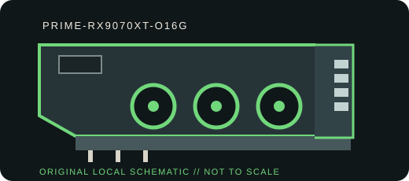

[ BOARD PARTNER MODEL // UNIQUE RETAIL SKU ]
ASUS Prime Radeon RX 9070 XT OC Edition 16 GB
A board-partner implementation with its own cooler, dimensions, power-feed layout and factory tuning. SKU: PRIME-RX9070XT-O16G.

VARIANT BOUNDARY: This is a partner add-in board, not an AMD reference-board listing. Board BIOS, cooler, power limit, connector population and port mix are model-specific; verify the exact revision/nameplate before installation.
Recorded specifications
| Manufacturer SKU | PRIME-RX9070XT-O16G |
|---|---|
| GPU / architecture | AMD Radeon RX 9070 XT / Navi 48, RDNA 4 |
| VRAM / memory bus | 16 GB GDDR6; 256-bit |
| Host interface | PCI Express 5.0 x16 (backward-compatible negotiation subject to motherboard/firmware and slot support) |
| Board power / power connectors | 304 W AMD reference typical board power; ASUS factory-OC power limit can vary by BIOS; 2 × PCIe 8-pin |
| Display outputs | 3 × DisplayPort 2.1a + 1 × HDMI 2.1b; check partner revision/active-display limit and cable capability. |
| Dimensions / slot fit | 304 × 126 × 50 mm (L × H × T), 2.5-slot; verify case clearance, adjacent slots, radiator/fan obstruction and airflow. |
| Cooler / construction | Prime compact triple Axial-tech fan cooler with phase-change GPU thermal pad |
| Driver / platform compatibility | AMD Software: Adrenalin Edition for supported 64-bit Windows versions; AMD Linux drivers are distributed by AMD and Linux vendors. A PCIe x16 slot is required; confirm OS, device-ID and release notes on AMD Support before deployment. No cross-vendor or older Radeon driver should be assumed compatible. |
Compatibility, service & archival notes
- Confirm the case can accept the published card length, thickness and power-cable bend radius. Provide unobstructed intake and support for the card's mass.
- Use the partner-recommended PSU capacity and native connector leads; do not infer the card's factory-OC power limit from AMD reference TBP.
- Install the AMD driver branch that explicitly supports the RX 9000 model and target operating system. Record version, OS build, device/subsystem ID, card BIOS switch position and firmware before servicing.
- Retain the exact SKU label and board revision. Variants sold under the same GPU name can use different power limits, cooler assemblies, ports and dimensions.
Manufacturer & platform sources
- Board-partner product specification / model pageProduct-family or model reference for the manufacturer SKU; check the current regional specification sheet and PCB revision.
- AMD Radeon product specificationsGPU architecture, memory, PCIe and reference power context; board-partner add-in-board specifications can differ.
- AMD Software and driver supportOfficial driver downloads and operating-system support information; confirm the exact model and OS.
GPU reference TBP is provided as a reference point where a separate add-in-board TBP is not stated here; factory-OC power behavior can exceed that figure. Manufacturer documentation and the physical nameplate take precedence.